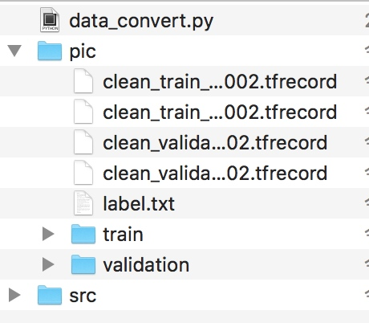

这里以VGG16网络为例，
1.准备数据
python data_convert.py -t pic --train-shards 2 --validation-shards 2 --num-threads 2 --dataset-name guangdong
执行完后会在pic下生成tf格式的训练+测试数据，以及label.txt

2.使用tensorflow的slim微调模型
简单介绍下google的这个图像分类工具包tensorflow-slim
├── README.md
├── datasets # 定义训练时候使用的数据。如果是自己的数据，必须在此文件夹下定义
├── deployment
├── download_and_convert_data.py
├── export_inference_graph.py
├── export_inference_graph_test.py
├── nets # 定义了一些常用的网络，比如vgg16，vgg19，resnet等
├── preprocessing # 在读入图像前，对图像做的一些预处理
├── scripts
│ ├── finetune_inception_v1_on_flowers.sh
│ ├── finetune_inception_v3_on_flowers.sh
│ ├── finetune_resnet_v1_50_on_flowers.sh
│ ├── train_cifarnet_on_cifar10.sh
│ └── train_lenet_on_mnist.sh
├── setup.py
├── slim_walkthrough.ipynb
├── eval_image_classifier.py # 验证模型入口
└── train_image_classifier.py # 训练模型入口
(1) 定义新的dataset文件
仿照datasets/flowers.py 写一个自己的数据文件guangdong.py 并且在dataset_factory.py中进行注册
(2)准备训练文件夹
(3)train model
python train_image_classifier.py \
--train_dir=guangdong/train_dir \
--dataset_name=guangdong \
--dataset_split_name=train \
--dataset_dir=guangdong/data \
--model_name=inception_v3 \
--checkpoint_path=guangdong/pretrained/inception_v3.ckpt \
--checkpoint_exclude_scopes=InceptionV3/Logits,InceptionV3/AuxLogits \
--trainable_scopes=InceptionV3/Logits,InceptionV3/AuxLogits \
--max_number_of_steps=100000 \
--batch_size=32 \
--learning_rate=0.001 \
--learning_rate_decay_type=fixed \
--save_interval_secs=300 \
--save_summaries_secs=2 \
--log_every_n_steps=10 \
--optimizer=rmsprop \
--weight_decay=0.00004
如果执行后报错Cannot assign a device for operation 'InceptionV3/AuxLogits/Conv2d_2b_1x1/weights/RMSProp1': Could not satisfy explicit device specification '/device:GPU:0' because no supported kernel for GPU devices is available 之类的话
可以参看这个的解决办法https://blog.csdn.net/xd_wjc/article/details/80550862
tensorboard 查看任务运行情况
tensorboard --logdir guangdong/train_dir
训练完毕之后进行模型评估
python eval_image_classifier.py \
--checkpoint_path=guangdong/train_dir \
--eval_dir=guangdong/eval_dir \
--dataset_name=guangdong \
--dataset_split_name=validation \
--dataset_dir=guangdong/data \
--model_name=inception_v3
案例
https://github.com/ns2250225/python3_tf_slim_image_classify